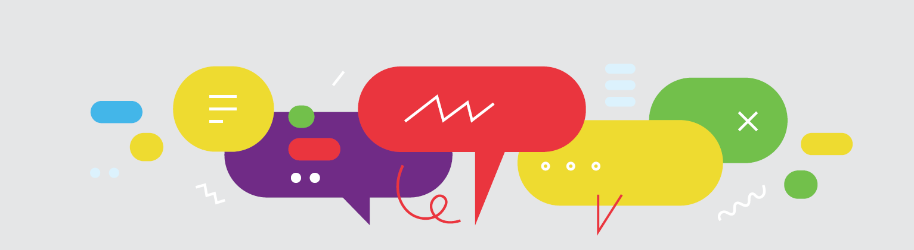
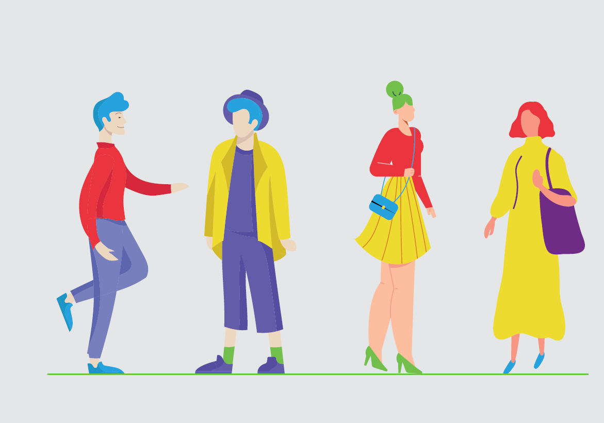

Motion design & identité animée
Sommet de la Francophonie
de Djerba 2022
Djerbä — XVIIIᵉ Sommet de la Francophonie 2022
+30 illustrations


Vidéo explicative
Accréditation presse
Une vidéo pédagogique pour accompagner les journalistes dans leur demande d'accréditation, du premier réflexe (chercher « Sommet de la Francophonie de Djerba 2022 » sur Google) jusqu'à la confirmation de leur dossier sur la plateforme officielle.